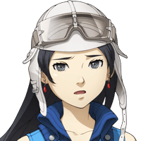

セリア
異界の力を借りてた割には それほど強くなかったわね。
セリア
アサヒ、シェーシャとやらの 力は感じなかった？
アサヒ
感じなくもなかったけど、 それほどでもなかったような……。
アサヒ
でも、皆さん、本当に強いんですね！ あたし、びっくりしました！


アサヒ
だからこそ、それだけに……。
カル
アサヒさん、確かに多くの人々を導くのは 大切なことだと思う。
カル
Shou-chanは昔から まず、側にいる人から助けようとするんだ。
カル
今回はそれがたまたま女神さんだったから 大事に巻き込まれちまったけどな。
セリア
まあ、こいつはバカだから、 事の大小じゃなくて
セリア
手当たり次第、やりたいことをしてるって 感じよね。
アサヒ
目の前にある小さな命や願いだって 大事にしなきゃいけないですよね！
アサヒ
あたしの幼馴染も あなたと同じかもしれない。
セリア
Shou-chan、アンタがきちんと 伝えないから面倒なことになるのよ！
アサヒ
２人だけで倒しちゃうなんて さすがノゾミさん！
グラデンス
フォッフォッフォッ、 まあたまにはワシも働かんとの。
グラデンス
それより、アサヒちゃん、ノゾミちゃん。
グラデンス
どうやらワシの予測は 当たったみたいじゃぞ。
グラデンス
アサヒちゃん、ノゾミちゃん、 このゲートを越えれば
グラデンス
元いた世界に戻れるはずじゃ。 準備はいいかの？
グラデンス
このゲートは特殊な状況で発生しているため 不安定でいつ消えるかわからん。
ノゾミ
カルくん、セリア、グラデンスさん、 Shou-chan、
ノゾミ
あなたたちとグランガイアで 出会えたこと、
アサヒ
短い間だったけど、 みんなに会えたこと、あたし、忘れません！
アサヒ
Shou-chan、あなたはこれからも ワガママに人助けをし続けてね！
アサヒ
もしまた来た時に神様とかになってたら あたしが退治しちゃうからね！
カル
絶望的な状況にも関わらず 希望を持って戦い続ける……。
グラデンス
さて、これで任務完了じゃな。 ワシらもエルガイアに帰るとするかの。
不思議な幽霊？
ま、２人とも待ちたまえ！ 誰かを忘れてやしないか！
不思議な幽霊？
そこのゲート、まだ閉じるなよ！ 私も元の世界に帰るのだからなー！
セリア
なんだったの今の？ 人…ではなかったようだけど……。
カル
ま、まあ、あの２人とも 知り合いみたいだし、
カル
お前はアサヒさんと話した内容を しっかりと覚えておかないとな。
カル
それをどんな相手にどう使うかは お前次第なんだからさ。